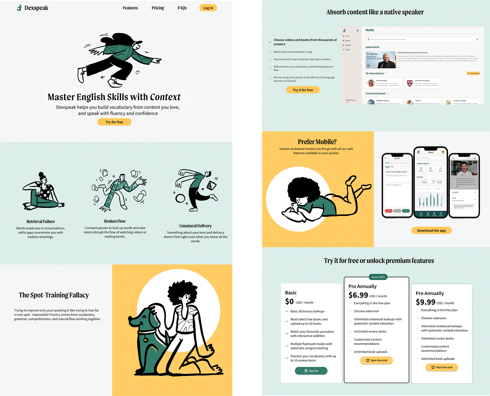
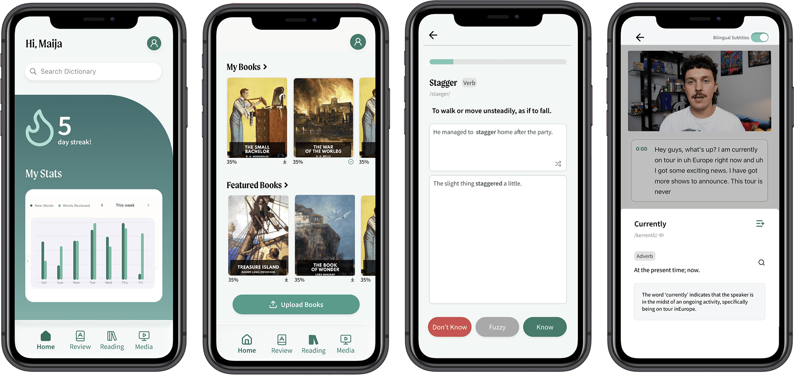
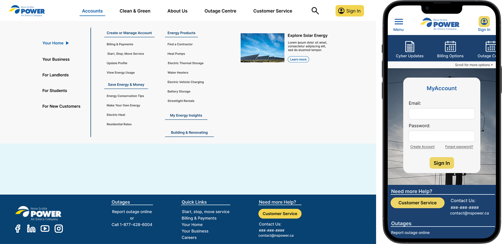
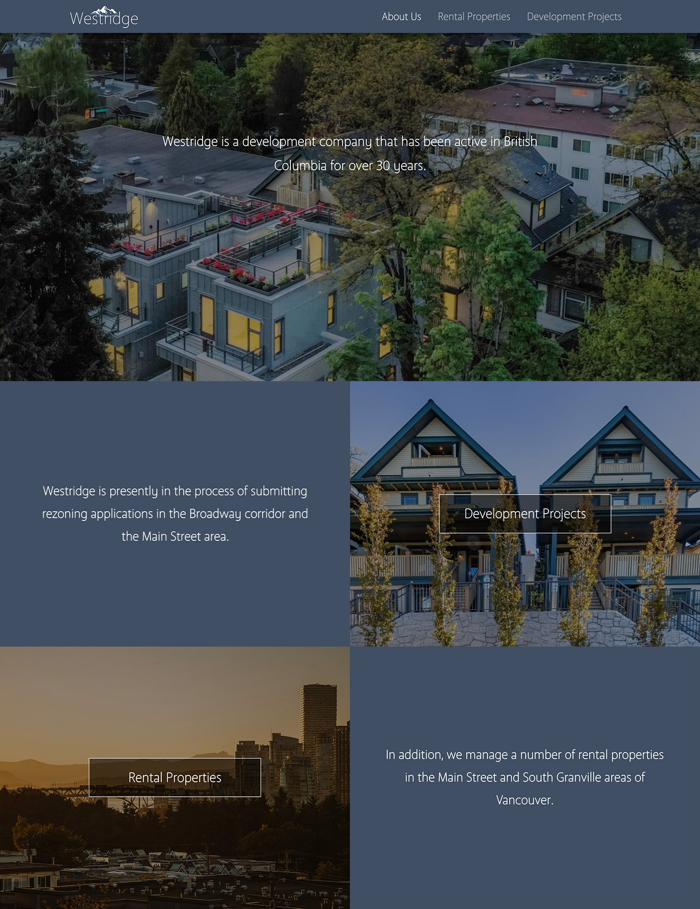
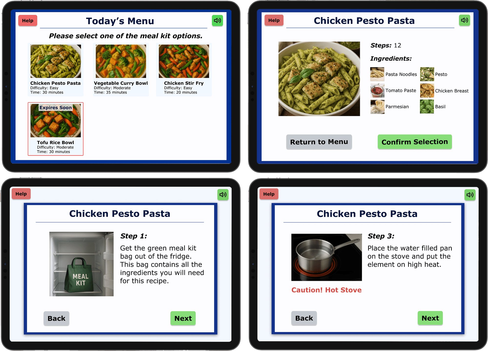
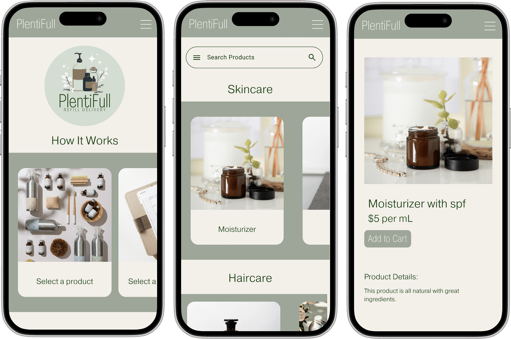

As the branding and product designer, I created a brand guide including a logo, colour palette, and typography. I also Designed a web landing page to highlight marketing materials and subscriptions features. Finally, I delivered high fidelity prototypes for the language learning platform’s mobile and web apps.
 While completing my Digital Experience Internship at Nova Scotia Power, I contributed towards an upcoming web update project. This included creating web mockups to improve the mobile experience and a menu overhaul to address navigation challenges. In addition to the update project, I also completed routine web updates and the creation of new pages.
I acted as a web designer and developer for westridge properties, creating a website using Figma, HTML, CSS, JavaScript, Filezilla, and Hostinger. In addition to web design and development, I created branding materials including a logo and typography. While working for Westridge, I also set up internal storage procedures for easy access to company materials and documentation.
Fresh For All is a prototype I created as part of a research project during my Master of Digital Innovation. The research project was exploring how people with mild cognitive impairment, including early stage dementia can benefit from assistive technology. This project culminated in a proposed prototype for Fresh For All, an assistive cooking application designed to help people with cognitive impairment cook independently and safely. Accessible design is something I am very passionate about and this project was a great opportunity to explore how accessible technology can help people of different abilities.
PlentiFull is a portfolio practicum created for my Bachelor of Commerce specialization in Entrepreneurship. This project required market research, brand design, product design, and business strategy to create a new venture concept. These prototypes show the layout for a delivery service providing sustainable refills of household goods and cosmetic products.
